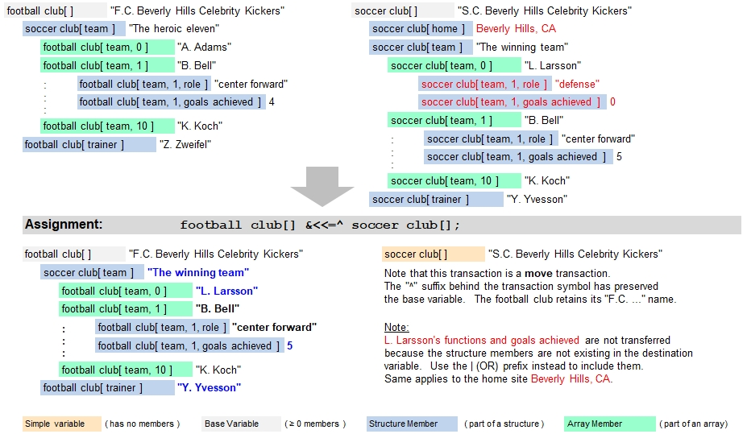

Introduction
The following pages summarize the transactions using the & prefix. Different from transactions without assignment operators where the destination variable or table row is initialized first, the existing values in the destination are overwritten if the corresponding source data is available in the same member variable position or with same table column header name or number. More specifically, following rules apply:
- Existing structure members will be overwritten
- Missing structure members will not be created and the corresponding data will not be written
- Existing array members will be overwritten
- Existing arrays will notbe extended with additional members if not all data fit in the existing members, meaning that the remaining data will not be transferred.
- If the destination is a table, then no additional columns will be added to fit the data. Excessive data will not be transferred
- Missing arrays and/or structures will not be created (in order to transfer the remaining data which will not be the case)
Typical Example
